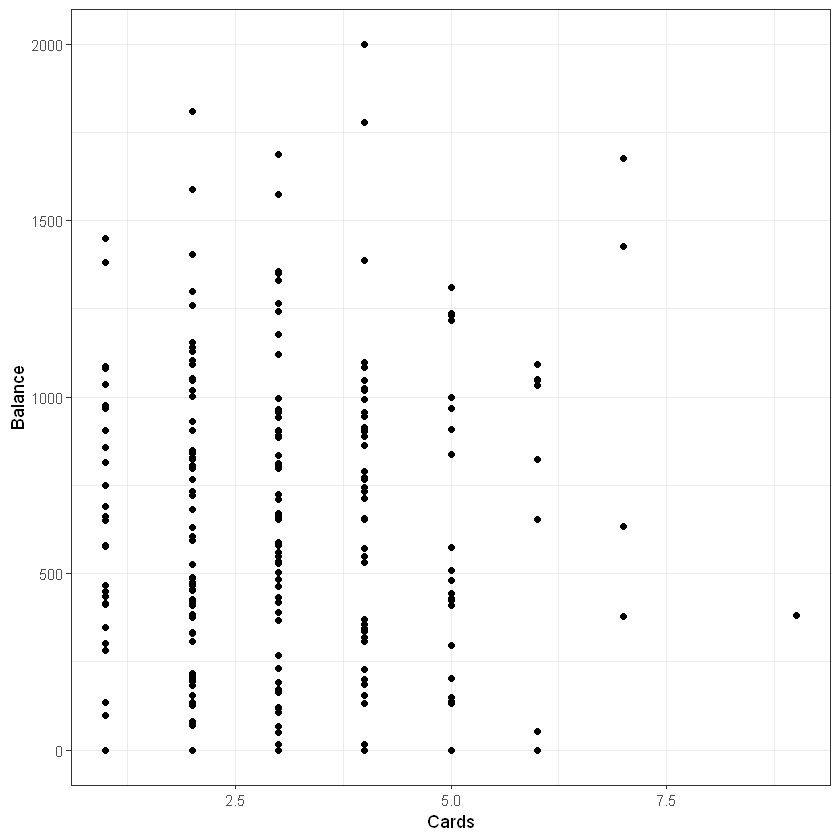

# install.packages("DMwR")
# install.packages("gmodels")
# install.packages("rpart")
# install.packages("partykit")
# install.packages("rpart.plot")
# install.packages("RColorBrewer")
# install.packages("rattle")4 Дерева рішень. Регресія. Баланс кредитної карти
Прикладне математичне моделювання в R
У даній частині навчального процесу потрібно побудувати математичні моделі регресії клієнтів на основі алгоритму дерева рішень та перевірити їх на тестовій вибірці.
4.1 Підготовка
Sys.setlocale("LC_CTYPE", "ukrainian")
options(warn = -1)
'Ukrainian_Ukraine.1251'
Джерела:
- An Introduction to Statistical Learning with Applications in R http://www-bcf.usc.edu/~gareth/ISL/data.html
- Predicting Credit Card Balance using Regression https://www.kaggle.com/suzanaiacob/predicting-credit-card-balance-using-regression/notebook
Для виконнання завдань потрібний ряд R-пакетів:
suppressMessages(library(ggplot2)) # побудова графіків
suppressMessages(library(gmodels)) # побудова крос-таблиць
suppressMessages(library(rpart)) # дерево рішень
suppressMessages(library(partykit)) # дерево рішень
suppressMessages(library(rpart.plot)) # візуалізація дерева рішень
suppressMessages(library(DMwR)) # оцінка похибок моделі
suppressMessages(library(rattle)) # допомога у візуалізації
suppressMessages(library(RColorBrewer)) # допомога у візуалізації Your code contains a unicode char which cannot be displayed in your
current locale and R will silently convert it to an escaped form when the
R kernel executes this code. This can lead to subtle errors if you use
such chars to do comparisons. For more information, please see
https://github.com/IRkernel/repr/wiki/Problems-with-unicode-on-windowsЯкщо ці пакети відсутні, то інсталюйте їх за допомогою команди install.packages(назва_пакету).
Для очистки сесії від непотрібних даних використайте команду rm():
rm(list = ls()) #видаляє усі змінні4.2 Набір даних
Дані складають з 400 спостежень та наступник пкоазників:
ID- ідентифікатор;Income- дохід у $10,0000;Limit- кредитний ліміт;Rating- кредитний рейтинг;Age- вік, роки;Education- освіта, кількість років навчання;Gender- стать (Male or Female);Student- флаг чи є студентом (Yes or No);Married- флаг чи одружений (Yes or No);Ethnicity- етнічна належність (African American, Asian or Caucasian);Balance- середній баланс по карті у $$.
Задача: визначити вплив факторів на середній баланс по карті.
Імпорт даних:
data <- read.csv("data/credit_card_balance.csv")Переглянемо структуру даних:
str(data)'data.frame': 400 obs. of 12 variables:
$ X : int 1 2 3 4 5 6 7 8 9 10 ...
$ Income : num 14.9 106 104.6 148.9 55.9 ...
$ Limit : int 3606 6645 7075 9504 4897 8047 3388 7114 3300 6819 ...
$ Rating : int 283 483 514 681 357 569 259 512 266 491 ...
$ Cards : int 2 3 4 3 2 4 2 2 5 3 ...
$ Age : int 34 82 71 36 68 77 37 87 66 41 ...
$ Education: int 11 15 11 11 16 10 12 9 13 19 ...
$ Gender : chr "Male" "Female" "Male" "Female" ...
$ Student : chr "No" "Yes" "No" "No" ...
$ Married : chr "Yes" "Yes" "No" "No" ...
$ Ethnicity: chr "Caucasian" "Asian" "Asian" "Asian" ...
$ Balance : int 333 903 580 964 331 1151 203 872 279 1350 ...head(data)| X | Income | Limit | Rating | Cards | Age | Education | Gender | Student | Married | Ethnicity | Balance | |
|---|---|---|---|---|---|---|---|---|---|---|---|---|
| <int> | <dbl> | <int> | <int> | <int> | <int> | <int> | <chr> | <chr> | <chr> | <chr> | <int> | |
| 1 | 1 | 14.891 | 3606 | 283 | 2 | 34 | 11 | Male | No | Yes | Caucasian | 333 |
| 2 | 2 | 106.025 | 6645 | 483 | 3 | 82 | 15 | Female | Yes | Yes | Asian | 903 |
| 3 | 3 | 104.593 | 7075 | 514 | 4 | 71 | 11 | Male | No | No | Asian | 580 |
| 4 | 4 | 148.924 | 9504 | 681 | 3 | 36 | 11 | Female | No | No | Asian | 964 |
| 5 | 5 | 55.882 | 4897 | 357 | 2 | 68 | 16 | Male | No | Yes | Caucasian | 331 |
| 6 | 6 | 80.180 | 8047 | 569 | 4 | 77 | 10 | Male | No | No | Caucasian | 1151 |
Оглянемо описову статистику факторів:
summary(data) X Income Limit Rating
Min. : 1.0 Min. : 10.35 Min. : 855 Min. : 93.0
1st Qu.:100.8 1st Qu.: 21.01 1st Qu.: 3088 1st Qu.:247.2
Median :200.5 Median : 33.12 Median : 4622 Median :344.0
Mean :200.5 Mean : 45.22 Mean : 4736 Mean :354.9
3rd Qu.:300.2 3rd Qu.: 57.47 3rd Qu.: 5873 3rd Qu.:437.2
Max. :400.0 Max. :186.63 Max. :13913 Max. :982.0
Cards Age Education Gender
Min. :1.000 Min. :23.00 Min. : 5.00 Length:400
1st Qu.:2.000 1st Qu.:41.75 1st Qu.:11.00 Class :character
Median :3.000 Median :56.00 Median :14.00 Mode :character
Mean :2.958 Mean :55.67 Mean :13.45
3rd Qu.:4.000 3rd Qu.:70.00 3rd Qu.:16.00
Max. :9.000 Max. :98.00 Max. :20.00
Student Married Ethnicity Balance
Length:400 Length:400 Length:400 Min. : 0.00
Class :character Class :character Class :character 1st Qu.: 68.75
Mode :character Mode :character Mode :character Median : 459.50
Mean : 520.01
3rd Qu.: 863.00
Max. :1999.00 Підготуємо дані до моделювання. Перетворимо категоріальні показники до факторів:
data$X <- NULL
data$Gender <- factor(data$Gender)
data$Student <- factor(data$Student)
data$Married <- factor(data$Married)
data$Ethnicity <- factor(data$Ethnicity)
Note
Спростіть код, використавши можливості пакету dplyr.
4.3 Тренувальна та тестова вибірки
Розділимо загальну вибірку на 2 частини: * тренувальна, 70% вибірки, для побудови регресії; * тестова, 30% вибірки, для перевірки точності моделі.
set.seed(2023) #довільне число як точка "відправки" для генератора випадкових чисел
# Згенеруємо набір чисел від 1 до кількості спостережень у вибірці і відберемо випадквоим чином 70% із них
train_index <- sample(1:nrow(data), size = 0.7*nrow(data))
#Запишемо по номерах відібраних рядків тренувальний набір даних
train_data <- data[train_index,]
#Всі інші значення, що не увійшли в тренувальну вибірку запишемо у тестову
test_data <- data[-train_index,]Переглянемо наявність зв’язків між числовими параметрами для тренувальної вибірки за допомогою матриці попарних кореляцій/ Дані на перетині рядків вказують на кореляцію між вибраними показниками.
cor(train_data[, -c(7:10)])| Income | Limit | Rating | Cards | Age | Education | Balance | |
|---|---|---|---|---|---|---|---|
| Income | 1.00000000 | 0.79741269 | 0.79561996 | 0.01713798 | 0.14965311 | 0.00177292 | 0.49497408 |
| Limit | 0.79741269 | 1.00000000 | 0.99694968 | 0.04559784 | 0.10507642 | 0.01659274 | 0.87729947 |
| Rating | 0.79561996 | 0.99694968 | 1.00000000 | 0.08941276 | 0.10494558 | 0.01233853 | 0.87873569 |
| Cards | 0.01713798 | 0.04559784 | 0.08941276 | 1.00000000 | 0.03596854 | -0.05142140 | 0.09550304 |
| Age | 0.14965311 | 0.10507642 | 0.10494558 | 0.03596854 | 1.00000000 | 0.07165503 | 0.03652931 |
| Education | 0.00177292 | 0.01659274 | 0.01233853 | -0.05142140 | 0.07165503 | 1.00000000 | 0.04109140 |
| Balance | 0.49497408 | 0.87729947 | 0.87873569 | 0.09550304 | 0.03652931 | 0.04109140 | 1.00000000 |
4.4 Оглядовий аналіз даних
Для початку переглянемо категоріальні змінні.
# Потбірні пакети
library(ggplot2)
library(gmodels)Стать (Gender):
ggplot(train_data, aes(Gender)) +
geom_bar(aes(fill = Gender)) +
theme_bw()
CrossTable(train_data$Gender)
Cell Contents
|-------------------------|
| N |
| N / Table Total |
|-------------------------|
Total Observations in Table: 280
| Female | Male |
|-----------|-----------|
| 149 | 131 |
| 0.532 | 0.468 |
|-----------|-----------|
Сімейний стан (Married):
ggplot(train_data, aes(Married)) + geom_bar(aes(fill = Married)) + theme_bw()CrossTable(train_data$Married)
Cell Contents
|-------------------------|
| N |
| N / Table Total |
|-------------------------|
Total Observations in Table: 280
| No | Yes |
|-----------|-----------|
| 101 | 179 |
| 0.361 | 0.639 |
|-----------|-----------|
Студент:
ggplot(train_data, aes(Student)) + geom_bar(aes(fill = Student)) + theme_bw()CrossTable(train_data$Student)
Cell Contents
|-------------------------|
| N |
| N / Table Total |
|-------------------------|
Total Observations in Table: 280
| No | Yes |
|-----------|-----------|
| 255 | 25 |
| 0.911 | 0.089 |
|-----------|-----------|
Етнічна належність:
ggplot(train_data, aes(Ethnicity)) + geom_bar(aes(fill = Ethnicity)) + theme_bw()CrossTable(train_data$Ethnicity)
Cell Contents
|-------------------------|
| N |
| N / Table Total |
|-------------------------|
Total Observations in Table: 280
| African American | Asian | Caucasian |
|------------------|------------------|------------------|
| 67 | 65 | 148 |
| 0.239 | 0.232 | 0.529 |
|------------------|------------------|------------------|
Порівняємо числові змінні з показником середнього балансу.
Графік залежності між доходом (Income) та середнім балансом по карті (Balance):
ggplot(train_data, aes(Income, Balance)) + geom_point() + theme_bw()Графік залежності між доходом (Rating) та середнім балансом по карті (Balance):
ggplot(train_data, aes(Rating, Balance)) + geom_point() + theme_bw()Графік залежності між кількістю карт (Cards) та середнім балансом по карті (Balance):
ggplot(train_data, aes(Cards, Balance)) + geom_point() + theme_bw()
Графік залежності між віком (Age) та середнім балансом по карті (Balance):
ggplot(train_data, aes(Education, Balance)) + geom_point() + theme_bw()Графік розподілу значень балансу:
4.5 Моделювання. Робота з пакетом RPart
4.5.1 Побудова моделі без налаштувань
Для побудови регресії на основі дерева рішень інсталюємо пакет rpart (install.package("rpart")).
Використаємо функцію для побудови моделі rpart():
#library(rpart)
rpart_model <- rpart(Balance ~ ., train_data)Створимо дата-фрейми для запису результатів моделювання на тестовій та тренувальній вибірках:
train_res <- data.frame(No = c(1:nrow(train_data)),
Balance = train_data$Balance,
RPartPredictedDef = predict(rpart_model, train_data))
test_res <- data.frame(No = c(1:nrow(test_data)),
Balance = test_data$Balance,
RPartPredictedDef = predict(rpart_model, test_data))
head(train_res)| No | Balance | RPartPredictedDef | |
|---|---|---|---|
| <int> | <int> | <dbl> | |
| 373 | 1 | 840 | 453.17778 |
| 361 | 2 | 712 | 891.97561 |
| 243 | 3 | 16 | 64.26136 |
| 282 | 4 | 0 | 64.26136 |
| 44 | 5 | 976 | 891.97561 |
| 354 | 6 | 425 | 453.17778 |
4.5.2 Оцінка метрик
Переглянемо похибки моделі на обох вибірках:
#library(DMwR)
regr.eval(train_res$Balance, train_res$RPartPredictedDef)
regr.eval(test_res$Balance, test_res$RPartPredictedDef)- mae
- 119.689257298022
- mse
- 26183.8847433001
- rmse
- 161.814352711062
- mape
- Inf
- mae
- 159.674646317362
- mse
- 49034.8928845991
- rmse
- 221.438237178223
- mape
- Inf
Оцінимо точність моделі за допомогою коефіцієнта детермінації:
r_train <- cor(train_res$Balance, train_res$RPartPredictedDef)^2
r_test <- cor(test_res$Balance, test_res$RPartPredictedDef)^2
print(paste("R_train = ", r_train, sep = ""))
print(paste("R_test = ", r_test, sep = ""))[1] "R_train = 0.872679719680806"
[1] "R_test = 0.780363587175022"Для покращення візуалізації відсортуємо результати:
# відсортуємо за зростанням значення балансів карт
ordered_train_res <- train_res[order(train_res$Balance),]
# відсортуємо за зростанням значення модельованого значення балансу
ordered_train_res <- train_res[order(train_res$RPartPredictedDef),]
# "Перепишемо" номери по порядку
ordered_train_res$No <- c(1:nrow(train_res))Побудуємо графік модельованих та реальних значень балансу з відсортованими показниками для наочності:
ggplot(ordered_train_res) +
geom_point(aes(x = No, y = Balance), colour = "blue") +
geom_line(aes(x = No, y = RPartPredictedDef), colour = "red", size = 1) + theme_bw()
Переглянемо залежність між рейтингом та балансом клієнта, а також прогнозованих значеннях.
ggplot(train_data) +
geom_point(aes(x = Rating, y = Balance), colour = "blue") +
geom_line(aes(x = Rating, y = train_res$RPartPredictedDef), colour = "red") + theme_bw()4.5.3 Візуальне представлення
Для візуалізації дерева рішень скористаємося пакетом rpart.plot:
#library(rpart.plot)
prp(rpart_model)prp(rpart_model, extra = 1, type = 2)Додамо інтерактивності для побудованого дерева рішень:
prp(rpart_model, snip = TRUE) # Працює у RStudioПобудуємо також “розфарбоване” дерево рішень за допомогою пакетів rattle та RColorBrewer:
#library(rattle)
#library(RColorBrewer)
fancyRpartPlot(rpart_model)4.5.4 Побудова моделі з розділеннями
Побудуємо модель з вказанням мінімальної кількості розділень даних (minsplit):
rpart_model2 <- rpart(Balance ~ ., train_data, control = rpart.control(minsplit = 10))Отримаємо прогнозовані значення для обох вибірок на основі другої моделі:
train_res$RPartPredicted10 <- predict(rpart_model2, train_data)
test_res$RPartPredicted10 <- predict(rpart_model2, test_data)
head(train_res)| No | Balance | RPartPredictedDef | RPartPredicted10 | |
|---|---|---|---|---|
| <int> | <int> | <dbl> | <dbl> | |
| 373 | 1 | 840 | 453.17778 | 836.25000 |
| 361 | 2 | 712 | 891.97561 | 891.97561 |
| 243 | 3 | 16 | 64.26136 | 64.26136 |
| 282 | 4 | 0 | 64.26136 | 64.26136 |
| 44 | 5 | 976 | 891.97561 | 891.97561 |
| 354 | 6 | 425 | 453.17778 | 415.80488 |
4.5.5 Оцінка метрик
Переглянемо похибки:
regr.eval(train_res$Balance, train_res$RPartPredicted10)
regr.eval(test_res$Balance, test_res$RPartPredicted10)- mae
- 115.002097019276
- mse
- 23883.0154977523
- rmse
- 154.541306768619
- mape
- Inf
- mae
- 152.524889090623
- mse
- 43219.8819877103
- rmse
- 207.89392003546
- mape
- Inf
Оцінимо точність моделі за допомогою коефіцієнта детермінації:
r_train <- cor(train_res$Balance, train_res$RPartPredicted10)^2
r_test <- cor(test_res$Balance, test_res$RPartPredicted10)^2
print(paste("R_train =", r_train, sep = ""))
print(paste("R_test =", r_test, sep = ""))[1] "R_train =0.883867796629392"
[1] "R_test =0.805983358303455"4.5.6 Візуалізація результатів
Візуалізуємо модель:
prp(rpart_model2)4.6 Моделювання. Робота з пакетом partykit
Побудуємо дерево рішень на основі partykit та функції ctree() та порівняємо з результатами роботи rpart().
#library(partykit)
party_model <- ctree(Balance ~ ., data = train_data[1:100,]) # перших 100 спостережень
print(party_model)
Model formula:
Balance ~ Income + Limit + Rating + Cards + Age + Education +
Gender + Student + Married + Ethnicity
Fitted party:
[1] root
| [2] Rating <= 342
| | [3] Rating <= 245: 3.360 (n = 25, err = 4597.8)
| | [4] Rating > 245
| | | [5] Income <= 19.782: 416.200 (n = 10, err = 290573.6)
| | | [6] Income > 19.782: 221.889 (n = 18, err = 254079.8)
| [7] Rating > 342
| | [8] Rating <= 599: 765.051 (n = 39, err = 1913599.9)
| | [9] Rating > 599: 1380.625 (n = 8, err = 720389.9)
Number of inner nodes: 4
Number of terminal nodes: 5plot(party_model)party_model <- ctree(Balance ~ ., data = train_data)
print(party_model)
Model formula:
Balance ~ Income + Limit + Rating + Cards + Age + Education +
Gender + Student + Married + Ethnicity
Fitted party:
[1] root
| [2] Rating <= 353
| | [3] Rating <= 278
| | | [4] Student in No
| | | | [5] Rating <= 249: 8.516 (n = 62, err = 64369.5)
| | | | [6] Rating > 249: 167.056 (n = 18, err = 91486.9)
| | | [7] Student in Yes: 265.000 (n = 8, err = 223014.0)
| | [8] Rating > 278
| | | [9] Income <= 44.978: 453.178 (n = 45, err = 1330364.6)
| | | [10] Income > 44.978: 104.273 (n = 11, err = 45162.2)
| [11] Rating > 353
| | [12] Rating <= 682
| | | [13] Limit <= 5310
| | | | [14] Income <= 48.218: 717.778 (n = 27, err = 670882.7)
| | | | [15] Income > 48.218: 352.583 (n = 12, err = 243564.9)
| | | [16] Limit > 5310
| | | | [17] Student in No
| | | | | [18] Income <= 101.788
| | | | | | [19] Rating <= 536
| | | | | | | [20] Income <= 63.809
| | | | | | | | [21] Rating <= 456
| | | | | | | | | [22] Income <= 34.48: 934.222 (n = 18, err = 95773.1)
| | | | | | | | | [23] Income > 34.48: 808.000 (n = 7, err = 45006.0)
| | | | | | | | [24] Rating > 456: 1028.533 (n = 15, err = 106875.7)
| | | | | | | [25] Income > 63.809: 734.714 (n = 14, err = 332820.9)
| | | | | | [26] Rating > 536: 1173.250 (n = 12, err = 307664.2)
| | | | | [27] Income > 101.788: 667.545 (n = 11, err = 816958.7)
| | | | [28] Student in Yes: 1160.778 (n = 9, err = 523847.6)
| | [29] Rating > 682: 1584.909 (n = 11, err = 510442.9)
Number of inner nodes: 14
Number of terminal nodes: 15plot(party_model)Обчислимо модельовані значення середнього балансу по карті:
train_res$PredictedPartyDef <- predict(party_model, train_data)
test_res$PredictedPartyDef <- predict(party_model, test_data)Переглянемо коефіцієнти детермінації:
r_train <- cor(train_res$Balance, train_res$PredictedPartyDef)^2
r_test <- cor(test_res$Balance, test_res$PredictedPartyDef)^2
print(paste("R_train = ", r_train, sep = ""))
print(paste("R_test = ", r_test, sep = ""))[1] "R_train = 0.906079382030953"
[1] "R_test = 0.857313458113989"